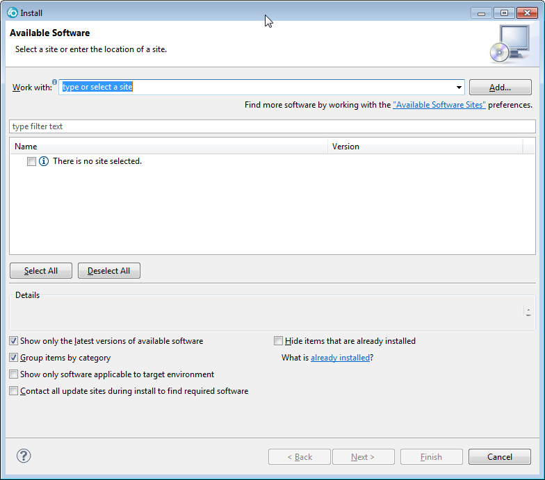
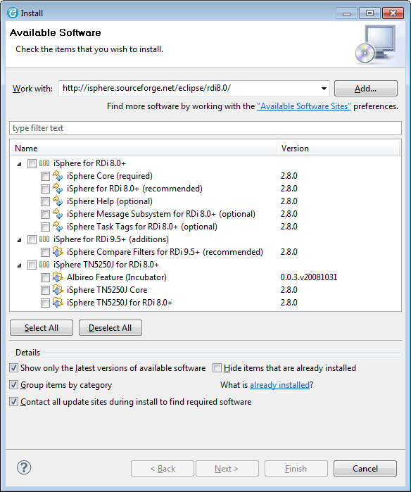
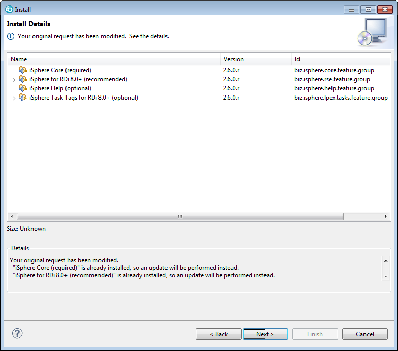
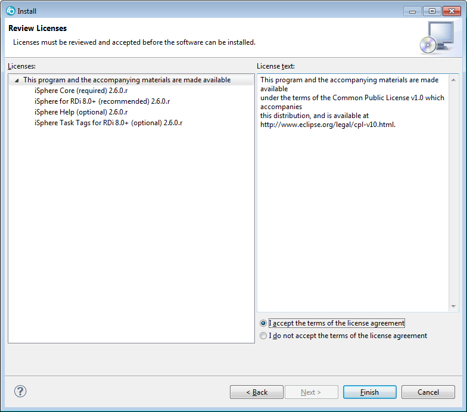
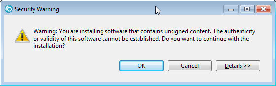
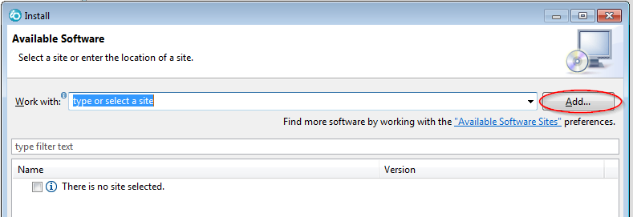
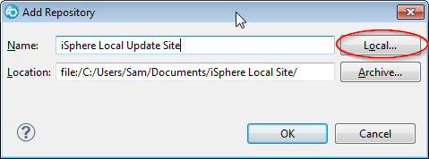
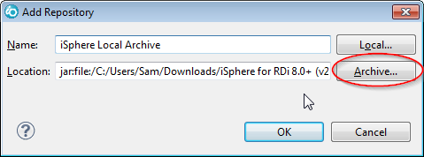

| Make sure that you have administrator rights if you
installed RDi into c:\Program Files. Otherwise you may encounter strange error messages such as 'No repository found containing ...' when attempting to install the iSphere plug-in. |
| Some people complained about various dependency errors, which could be solved by deselecting all update sites, leaving only iSphere checked. |
Please consider to install RDi to c:\IBM\... to avoid problems when installing plug-ins.
Using the iSphere Update Site requires the least effort to install the iSphere plug-ins for RDi 8.0 and later versions.
From the main menu, select "Help > Install New Software..." to enter the "Install" dialog.

Paste the URL of the iSphere update site http://isphere.sourceforge.net/eclipse/rdi8.0/
into the "Work with:" field and press enter.
Select the
options you want to install.
Click [Next >]

Review the Install Details then click [Next >]

Review and accept the license terms.
Click [Finish]

You may see a warning message. Click [OK].

In this approach you manually download the plug-ins once from SourceForge. The actual installation of the plug-ins can then be done without access to the Internet. You might use this approach if you have multiple developers and limited internet bandwidth.
Go to the iSphere download page at SourceForge and download the zip file for your environment.
Then follow these steps to create your local update site:


This approach is similar to using a local update directory, except that you don't unpack the zip file.
Go to the iSphere download page at SourceForge and download the zip file for your environment.
Then follow these steps to create your local update site:
